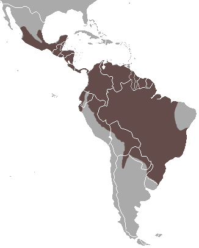

Irara

Nome científico:(Eira barbara Linnaeus, 1758)
Nome comum: Irara, papa-mel.
Classificação biológica:
Domínio: Eukaryota.
Reino: Animalia.
Filo: Chordata.
Classe: Mammalia.
Ordem: Carnivora.
Família: Mustelidae.
Gênero: Eira.
Espécie: Eira barbara.
Nutrição: Onívoro.
Hábitos alimentares: Alimenta-se de frutas, mel, pequenos mamíferos, aves, répteis e insetos. É um animal oportunista, adaptando sua dieta ao que está disponível no ambiente.
Morfologia do corpo: Possui corpo alongado, com pelagem marrom-escura ou preta e uma mancha amarela ou branca no peito. Mede entre 55 e 70 cm de comprimento, com uma cauda de 35 a 45 cm. Pesa entre 3 e 6 kg.
Comportamento: É um animal diurno e solitário, conhecido por sua agilidade e habilidade de escalar árvores. É um excelente caçador e forrageador.
Principais Presas: Frutas, mel, pequenos mamíferos, aves, répteis e insetos.
Principais Predadores: Onças-pintadas, jaguatiricas e grandes cobras, como a sucuri.
Locais habitados
Distribuição: Presente em todos os biomas brasileiros.
Habitat: Habita florestas tropicais, savanas e áreas de vegetação densa. Prefere locais próximos a rios e lagos.
Reprodução: A reprodução ocorre durante o ano todo, com gestação de aproximadamente 63 a 70 dias. A fêmea dá à luz de 2 a 4 filhotes, que são cuidados por cerca de 3 meses.